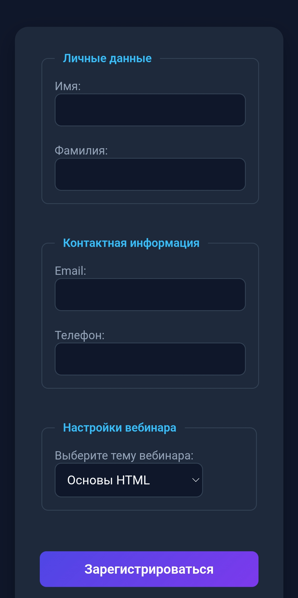

Кейс 2: Форма регистрации на вебинар
1. Задача
Разработать интерактивную и адаптивную веб-форму для регистрации пользователей на онлайн-вебинар. Форма должна собирать личные и контактные данные, а также предоставлять выбор темы вебинара.
2. Моя роль
Я полностью самостоятельно сверстала интерфейс формы. Настроила группировку полей с помощью семантических тегов, создала текстовые поля ввода для имени, фамилии, email и телефона, а также реализовала выпадающий список выбора тем и кнопку отправки формы.
3. Решения
Использовала теги <fieldset> и <legend> для логического разделения блоков «Личные данные» и «Контактная информация». Для выбора темы вебинара применила элемент <select>. Стилизовала интерфейс в современной темной теме с яркими акцентными кнопками с помощью CSS.
Иллюстрация проекта:

4. Результат
Интерфейс формы полностью готов, визуально привлекателен и удобен для заполнения как на компьютерах, так так и на мобильных устройствах.